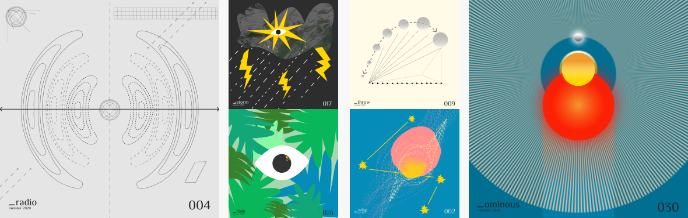

Overview
I created 31 illustrations for each day of october 2020 based on the inktober prompts.
Learning while exploring a visual language of different forms and colours, I created illustrations inspired by diagrams and kitsch. Most of the images are interpretations of organic forms, combined with geometrical shapes.

I approached the exercise looking for iterations of the same ideas. Making deliberate imperfect shapes that I can place into different compositions.
My main purpose was to be consistent, create a volume of visuals and improve my technical skills using Figma.